项目重点
用二维剖面的稳定性，去理解三维地质体的复杂性。
高陡岩壁的结构面、裂隙、岩穴和悬挑块体往往在三维空间中交织发育。直接在三维模型上识别，容易遇到遮挡、碎片化、路径无序和尺度不一致等问题，也会显著增加算法设计、维护和后续扩展的难度。
因此，本项目将核心方法概括为 数字测线框架：先把三维复杂特征降维到二维剖面中理解和识别，再通过高密度、可调节的测线采样，使离散剖面在目标尺度上近似代表连续岩体，最后把二维识别结果回投到三维空间进行结构重建和体积估算。
这个框架的数学思维在于：岩体本身是连续地质体，而测线是离散采样。通过采样密度控制，可以让离散观测在特定尺度上稳定逼近连续结构，从而兼顾地质解释、算法稳定性和工程可用性。
核心工作流
为什么要先把三维问题转成二维问题？
降低理解难度
三维岩壁中的结构组合很复杂，二维剖面可以把遮挡和空间交织简化为连续曲线，让结构形态更容易被观察、解释和复核。
降低算法难度
二维空间中路径追踪、方向判断和局部几何规则更稳定，算法更容易设计，也更便于调试、维护和后续开发。
保留连续性近似
通过可调节的高密度测线采样，离散剖面可以在目标尺度上近似表达连续岩体，再通过三维回投恢复空间意义。
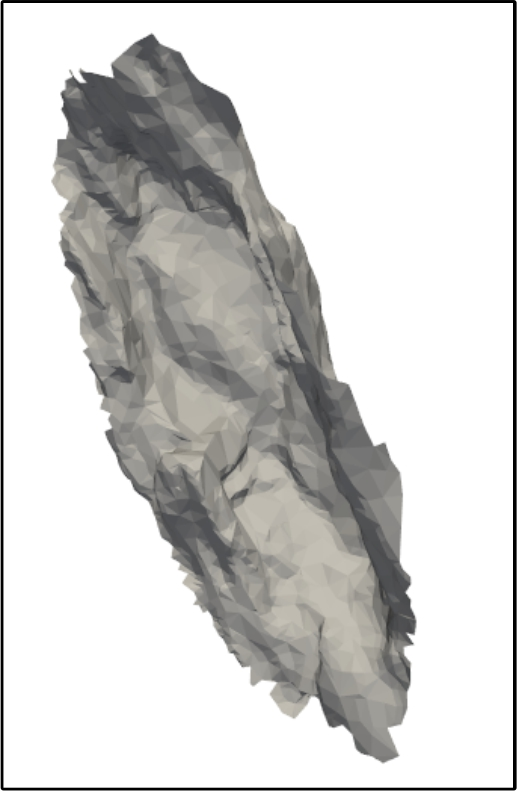
三维模型输入
以三角网格或点云表达岩壁表面，保留完整空间几何和局部起伏。
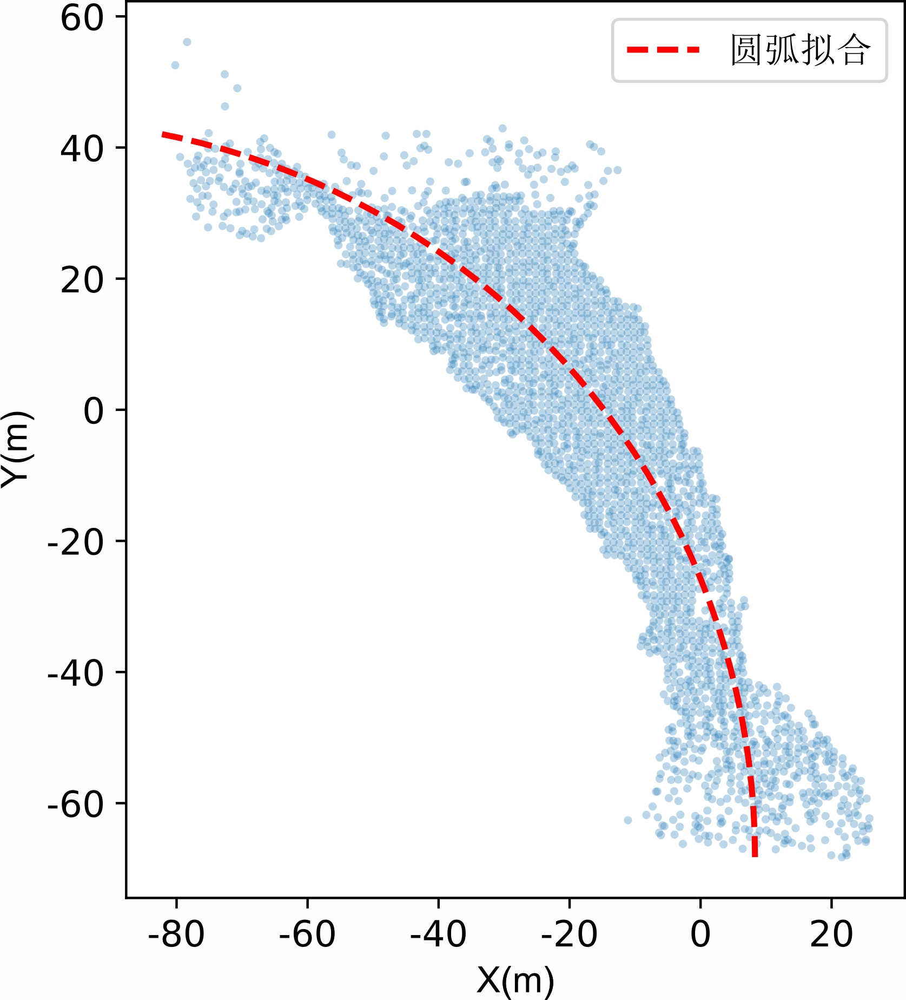
拟合基线与采样控制
用弧形基线贴合岩壁轮廓，并通过采样密度控制测线覆盖尺度。
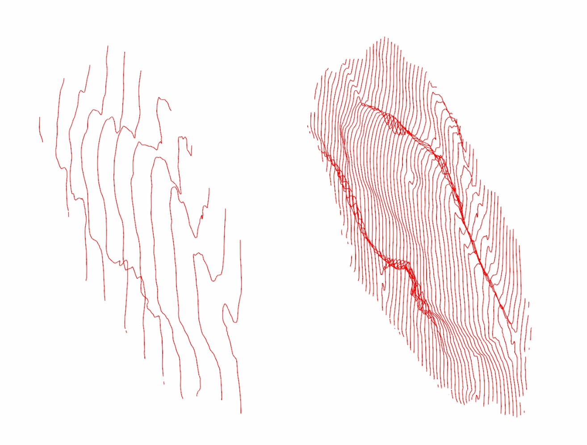
数字测线切片
沿基线生成连续剖面，获得一系列二维结构观察窗口。
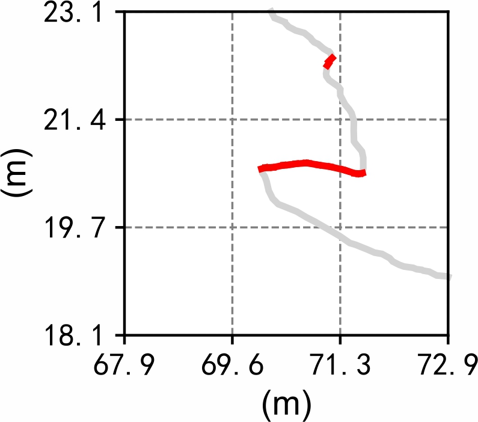
二维结构识别
在剖面曲线上追踪路径、计算局部方向，并识别悬挑、凹腔和外突特征。
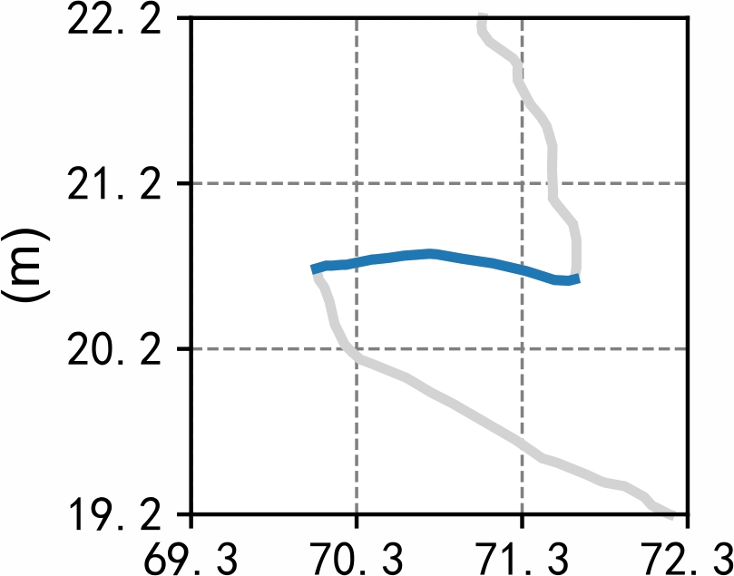
跨剖面聚合
把相邻剖面中的同类特征连接成结构组，得到可聚类的空间对象。
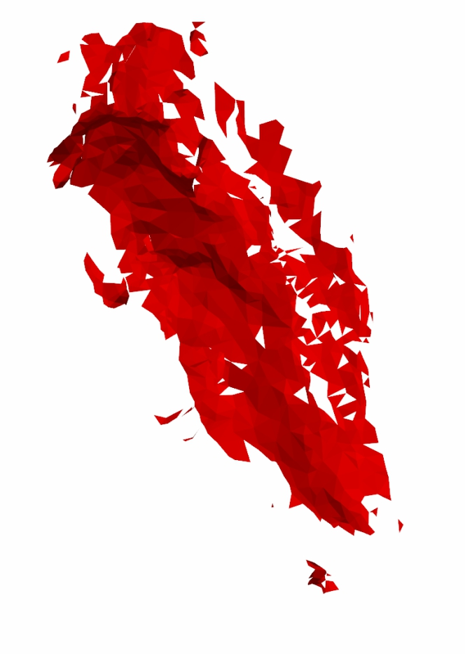
三维回投重建
把二维识别结果回到三维模型中，形成块体、面片、体素和密度表达。
方法效果
从网格、测线到结构重建的过程展示
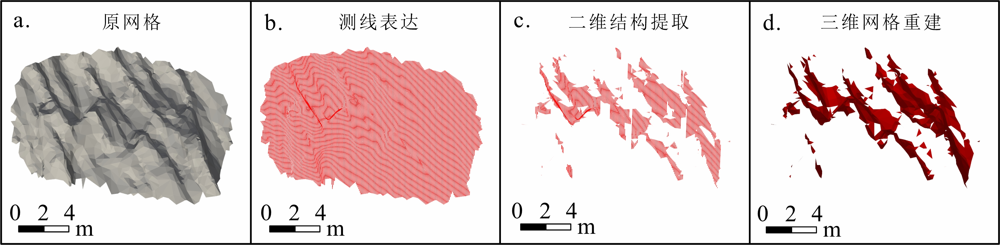
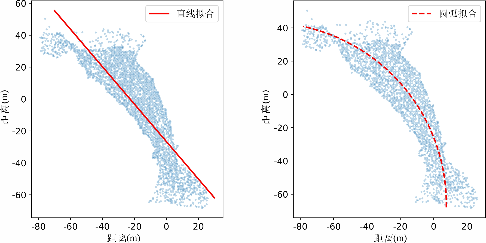
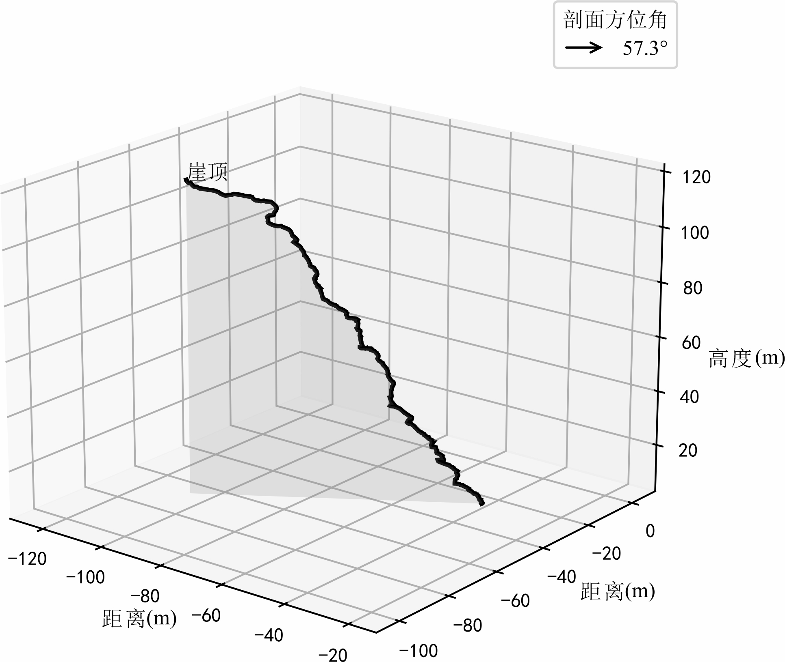
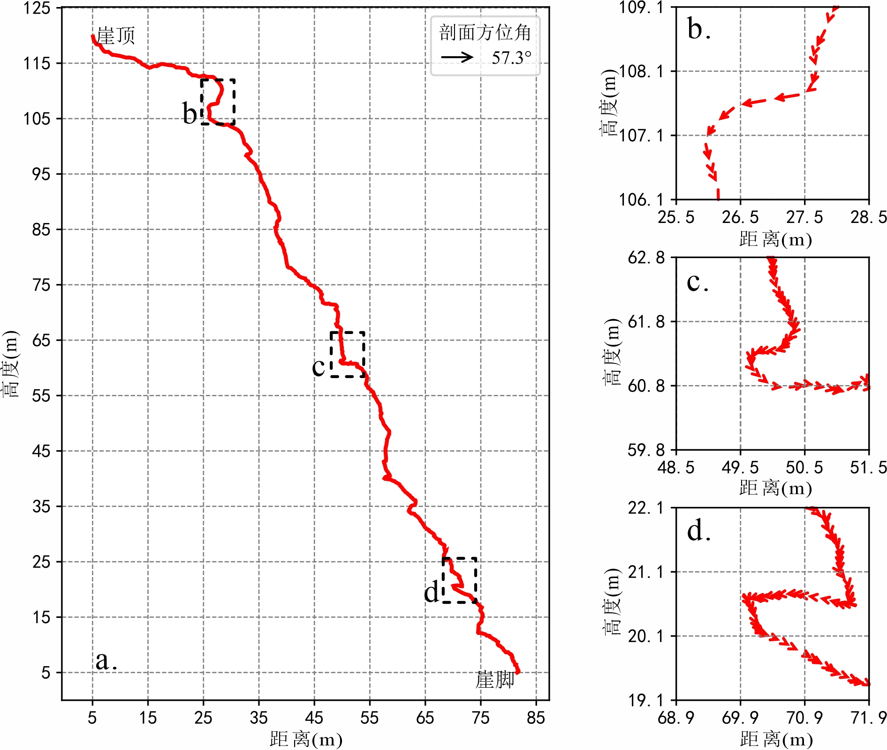
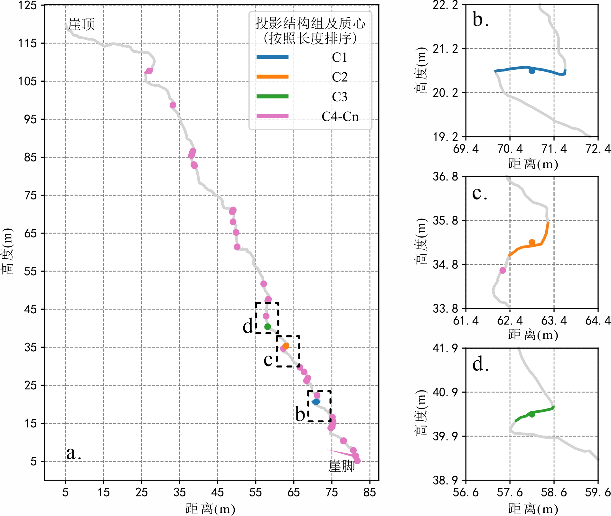
应用结论
从识别结果走向潜在危险体体积估算。
结构识别的价值不止于“把红色区域画出来”。在后续分析中，识别到的结构组可以被重建为三维块体，并进一步计算体积。体积较大的潜在危险体往往更需要优先核查，它们可以为现场治理、清方、锚固、防护网布设等措施提供量化参考。
右侧图像展示了体积排名靠前的潜在危险块体。这样的结果让算法输出更接近工程问题：哪里可能存在块体，块体有多大，哪些对象应当优先进入现场复核。
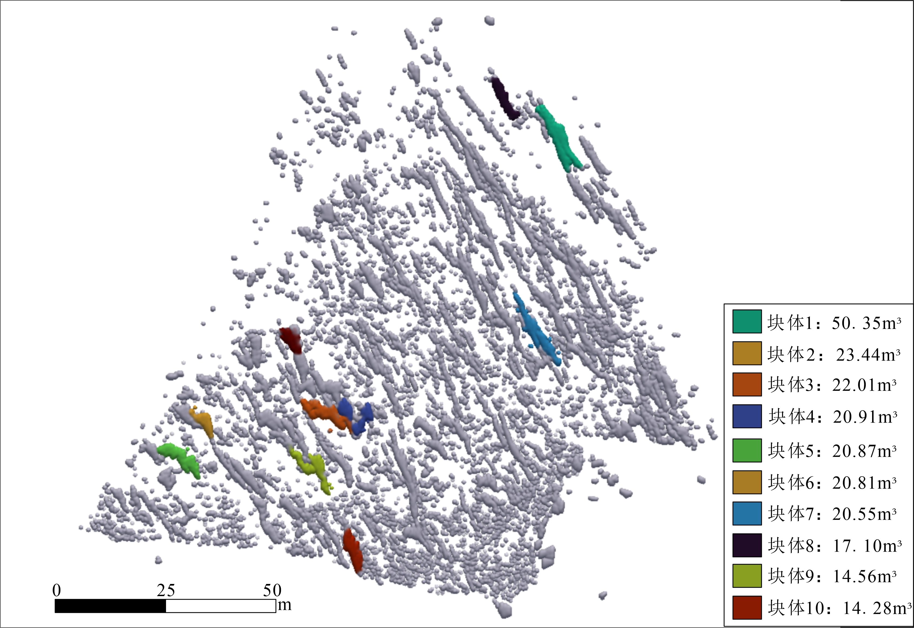
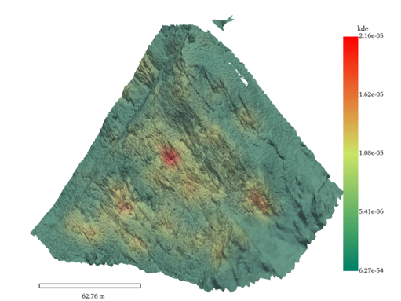
空间分布分析
不同尺寸块体的密度分布，可以揭示结构发育分区。
当结构单元被识别并量化后，可以按照块体尺度分组，进一步做三维空间核密度估计。小尺度块体的密集区可能对应强风化、破碎或裂隙密集区域；较大块体的聚集区则可能提示更值得关注的潜在失稳单元。
这类结果把几何识别、空间统计和工程解释连接起来，使项目不只是“识别算法”，也可以成为风险分区和现场调查布点的分析工具。
当前进度
目前项目已经建立基本融合框架，并实现了基于该框架的部分应用场景。
基础融合框架
以数字测线框架为核心，已经连通三维模型、二维测线识别、跨剖面聚合和三维重建。
应用端验证
已经实现潜在危险体体积估算、结构叠加展示和不同尺寸块体 KDE 空间分布等应用结果。
扩展与优化
继续扩大应用场景，同时优化基础框架，引入新方法提升识别准确性和泛化性能。
未来愿景
向更精细、更广泛、更融合的数字地质分析框架发展。
更精细的复杂结构识别
未来会引入基础模型或学习型组件，替代部分需要强泛化能力的关键步骤；同时用预设的几何框架和规则约束保证结果稳定可靠。
更广泛的应用场景
从悬挑块体识别扩展到岩体结构识别、裂隙与结构面表达、风险分区和现场调查辅助等更多地质体研究任务。
二维框架与三维模型融合
二维剖面适合稳定识别，三维模型适合空间表达。未来重点是更好地利用两者优势，让 2D 与 3D 协同服务地质解释。